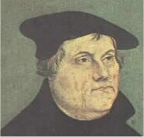
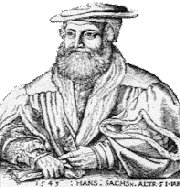
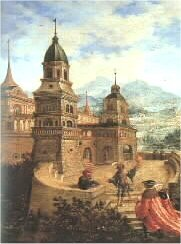
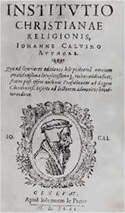
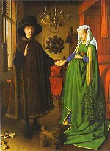
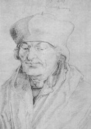
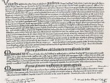

Zámek v Heidelbergu
|
RENESANČNÍ NĚMECKO
Nejstarší renesanční stavbou v Německu je fuggerovská kaple sv. Anny v Augšpurku z počátku 16. stol. Na krásu zámku v Heidelbergu můžeme usuzovat pouze z jeho ruin. Vrchol malířství představuje tzv. podunajská škola – Albrecht Altdorfer (Listnatý les se sv. Jiřím), Lucas Cranach (Venuše), Matthis Grünewald (Ukřižování). Albrecht Dürer se věnoval malířství (Růžencová slavnost) i grafice (Apokalypsa sv. Jana).
Šprýmař Enšpígl se stal hrdinou mnoha lidových vyprávění. Umělecky je zpracoval např. básník a dramatik Hans Sachs.
|
Historie
Německo bylo rozdělené na drobná knížectví až do 19. stol. Císař Svaté říše římské byl pouze formální hlavou této oblasti. V 16. stol. zde vznikla první protestantská církev – lutheránská. V roce 1530 byla sestavena augšpurská konfese (vyznání), kterou se podařilo prosadit v roce 1555.
|
Martin Luther (1483-1546)

Martin Luther na obraze od Lucase Cranacha

Němečtí sedláci, kteří povstali proti útlaku, byli brzy poraženi. Reformátor a vůdce Selské války (1524-25) Thomas Münzer skončil na popravišti. Od násilí a obrazoborectví se distancoval i Luther.
|
Martin Luther
Reformační hnutí začalo v Německu v roce 1517, když profesor teologie Martin Luther přibil na vrata kostela ve Wittenbergu 95 tezí, ve kterých kritizoval odpustky a další zlořády v církvi. Luther odmítal papežskou nadvládu, církev, svátosti, kult svatých patronů i mnišství (sám se oženil s jeptiškou). Jediným nástrojem spásy byla podle něj víra a Bible. Hlásil se k odkazu Jana Husa, odmítl své učení odvolat a musel se skrývat na hradě Wartburgu, kde přeložil Nový zákon do němčiny. Je autorem spisů Papežství v Římě, O babylonském zajetí církve a O svobodě křesťana. Na jeho učení je založena lutheránská církev.

Satirická ilustrace s odpůrci Martina Luthera
|

Grünewald: Ukřižování
Co si myslíš o Lutherových tezích? Souhlasíš s nimi? Proč? Připadají ti důležité?

Dürer: Apokalypsa sv. Jana
|
Hans Sachs (1495-1576)

Hans Sachs byl ševcovský mistr v Norimberku. Jako tovaryš hodně cestoval. Sachsova literární tvorba je velmi rozsáhlá a má renesanční i středověké rysy. Velké oblibě se těšily jeho masopustní frašky a šprýmy.
|
Hans Sachs: Šprýmy
Hans Sachs byl nejvýznamnějším představitelem literární školy mistrů pěvců norimberských. Složil asi 5000 mistrovských písní (především náboženských, ale také mravoučných a žertovných), 1500 bajek a 200 divadelních her. Hlásil se k lutheránství a kladl velký důraz na výchovnou a vzdělávací funkci literatury. Ve svých šprýmech a fraškách zpracoval řadu lidových námětů, například o Kocourkově.
|

Altdorfer: Alegorie
Znáš i jiné historky ze života v Kocourkově?
Víš, kdo složil operu Mistři pěvci norimberští?
|

Hora Materhorn v Alpách
|
RENESANČNÍ ŠVÝCARSKO
Švýcarsko zůstávalo na okraji mocenských zájmů a vyvíjelo se relativně samostatně. V umění, obzvláště v literatuře, se prolínají jazykové vlivy německé, francouzské, italské a rétorománské. Hlavní postavou lidové slovesnosti je národní hrdina Vilém Tell. Město Königsfelden proslulo dílnami, ve kterých vznikaly malby na skle. K významným švýcarským malířům patřili Manuel Deutsch a Urs Graf (Válka).
|
Historie
Švýcarské kantony získaly nezávislost na Habsburcích v průběhu 14. a 15. stol. V 16. stol. vystoupili církevní reformátoři Zwingli a Kalvín. V roce 1566 byla vyhlášena tzv. helvetská konfese (společné vyznání kalvinistů a zwingliánů).
|
Jan Kalvín (1509-1564)

|
Jan Kalvín
Církevní reformátor Jan Kalvín pocházel z Francie, ale protože zde byl za své názory pronásledován, odešel do Švýcarska. Působil v Basileji a Ženevě, kde nastolil tvrdý netolerantní režim, jehož základem byl kalvinismus. Je autorem latinských spisů Zřízení křesťanské víry a Ženevský katechismus.
|
Kalvinismus
Kalvinismus neuznává církevní obřady, zdůrazňuje prostý život, pracovitost a čestnost. Podle kalvinistů Bůh nezasahuje do běhu tohoto světa. Člověk je ke spáse nebo zatracení předurčen už od svého narození. Nemůže ji tedy vlastním jednáním ovlivnit. Kalvinisty byli francouzští hugenoti a angličtí (američtí) puritáni.
Sociolog Max Weber (1864-1920) se snažil ve své knize Protestantská etika a duch kapitalismu dokázat, že kalvinistický přístup ke světu měl značný vliv na vznik kapitalismu.
|

Jan van Eyck: Podobizna manželů Arnolfiniových
|
RENESANČNÍ NIZOZEMÍ
Nizozemský malíř Jan van Eyck [ejk] (1390-1441) začal využívat perspektivu a jeho postavy jsou velmi realistické (Podobizna manželů Arnolfiniových). Na rozhraní středověku a renesance stojí dílo malíře Hieronyma Bosche [bos] (1450-1516). Jeho Zahrada pozemských rozkoší je plná fantastických výjevů. Také malíř Pieter Bruegel starší [brechel] (1525-1569) zalidňoval své obrazy spoustou postav (Bitva masopustu s půstem) a jeho jméno se dokonce stalo synonymem neuspořádanosti – brajgl. V 16. stol. se nizozemské provincie vydávají různou cestou – sever je protestantský a jih katolický, což se odrazilo i v rozdělení umění na vlámské a holandské. Světově uznávaným myslitelem byl Erasmus Rotterdamský. Obyčejní lidé si oblíbili příběhy o čtverákovi jménem Thyl Ulenspiegel (v Německu se mu říkalo Enšpígl).
|
Historie
V roce 1581 se severní nizozemské provincie odtrhly od Španělska a vyhlásily nezávislost. Vládcem se stává Vilém Oranžský. Boje se Španělskem uzavřelo až dvanáctileté příměří z roku 1609.
|
Erasmus Rotterdamský
(1465-1536)

Erasmus Rotterdamský (vl.jm. Gerhard Gerhards) se narodil z nemanželského svazku. Vystudoval teologii na Sorbonně, hodně cestoval a dal se na dráhu učitele. Překládal řecká díla do latiny a vydával je. Přestože kritizoval církev a dopisoval si s Lutherem, zůstal katolíkem.

Bosch: Loď bláznů
|
Erasmus Rotterdamský: Chvála bláznivosti
Erasmus Rotterdamský věnoval svou latinskou alegorii Chvála bláznivosti (bláznovství) anglickému příteli Morovi. Hlavní postavou je paní Bláznivost a její družina (Opilost, Nevzdělanost, Sebeláska…). Erasmus vypočítává různé projevy bláznovství ve společnosti a hledá jejich příčiny. Jednou z hlavních je podle něj odklon od přirozenosti.
Souhlasíš s Erasmovými názory? Proč?
Jak se projevuje „bláznivost“ v současnosti?

Bruegel: Dětské hry
|
Hieronymus Bosch

Bosch: Léčba bláznovství

Bosch: Zahrada pozemských rozkoší
Jak na tebe působí Boschovy obrazy?
Poznáš, které hry hrají děti na Bruegelově obraze?
|
Ulenspiegl (Enšpígl)
Jméno Ulenspiegel (Enšpígl) by se dalo přeložit jako sova a zrcadlo (symboly moudrosti a šibalství). Jejich nositel proslul jako taškář, který putoval od města k městu a prováděl lidem jednu neplechu za druhou. Díky své chytrosti a drzosti napálil řadu důvěřivců. Většinou je přiváděl na pokraj šílenství tím, že doslovně plnil jejich příkazy. Thyl Ulenspiegel prý skutečně žil (zemřel kolem roku 1350). V 15. stol. začaly vznikat lidové příběhy o jeho kouscích a brzy potom vyšly knižně v mnoha zpracováních.
|
Charles de Coster: Pověst o Ulenspieglovi
Belgický spisovatel Charles de Coster (1827-1879) převyprávěl příběhy o Ulenspieglovi v historickém románu Pověst o Ulenspieglovi. Z dobrosrdečného šibala ale udělal mstitele, který se postavil na odpor Španělům při boji za osvobození nizozemských provincií.
|
Enšpígl

|
Internetové stránky
Sachs a divadlo
Sachs, informace
Luther, informace
Luther, informace
Erasmus Rotterdamský
Bruegel, obrazy
Bosh, obrazy
Bosh
Exkurze
Lutherhalle, Reformationsgeschichtliches Museum, Wittenberg
|
Doporučená četba
Coster, Charles de: Pověst o Ulenspieglovi, přel. M.Kornelová, SNKLU, Praha 1962
Erasmus Rotterdamský: Chvála bláznivosti, přel. R.Mertlík, Praha 1966
Hiršal, Kolář: Enšpígl
Hiršal, Kolář: Kocourkov
Chaunu, Pierre: Dobrodružství reformace, Svět Jana Kalvína, přel. Webrová, Kaňová, CDK, Praha 2001
Krijt, Krijtová: Průvodce dějinami nizozemské literatury, Panorama, Praha 1990
Sachs, Hans: Blázni v lázni, přel. I.Wernisch, Vyšehrad, Praha 2001
Sachs, Hans: Masopustní hry a šprýmy, SNKLHU, Praha 1957
Slovník spisovatelů německého jazyka a spisovatelů lužicko-srbských
Svatoš, Michal a Martin: Živá tvář Erasma Rotterdamského, Vyšehrad, Praha 1985
|
Připrav si referát o některé z uvedených knih nebo internetových stránek.

Odpustek
|